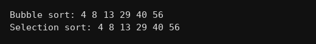

package interfaces;
public class Q245 {
interface Sortable {
void sort(int a[]);
}
static class BubbleSort implements Sortable {
public void sort(int a[]){
for(int i=0;i<a.length-1;i++){
for(int j=0;j<a.length-1-i;j++){
if(a[j]>a[j+1]){
int t = a[j];
a[j] = a[j+1];
a[j+1] = t;
}
}
}
}
}
static class SelectionSort implements Sortable {
public void sort(int a[]){
for(int i=0;i<a.length-1;i++){
int m = i;
for(int j=i+1;j<a.length;j++){
if(a[j]<a[m]) m = j;
}
int t = a[i];
a[i] = a[m];
a[m] = t;
}
}
}
static void dikha(int a[]){
for(int i=0;i<a.length;i++) System.out.print(a[i]+" ");
System.out.println();
}
public static void main(String[] args) {
int x[] = {29,4,56,13,8,40};
int y[] = {29,4,56,13,8,40};
Sortable s1 = new BubbleSort();
Sortable s2 = new SelectionSort();
s1.sort(x);
s2.sort(y);
System.out.print("Bubble sort: ");
dikha(x);
System.out.print("Selection sort: ");
dikha(y);
}
}